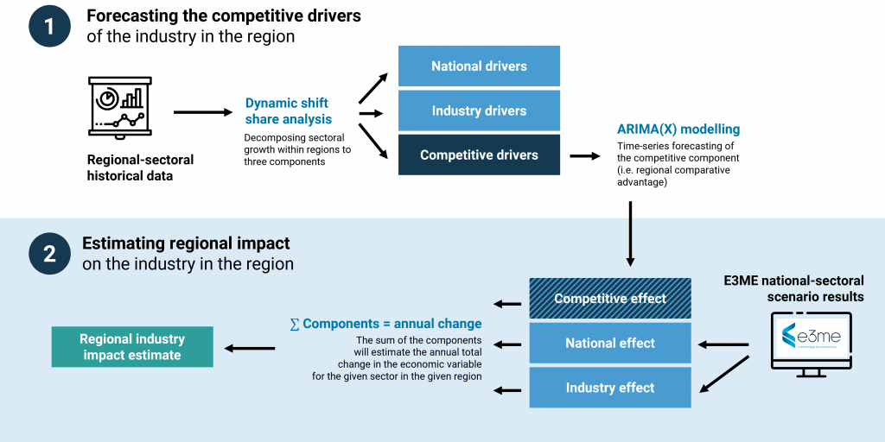
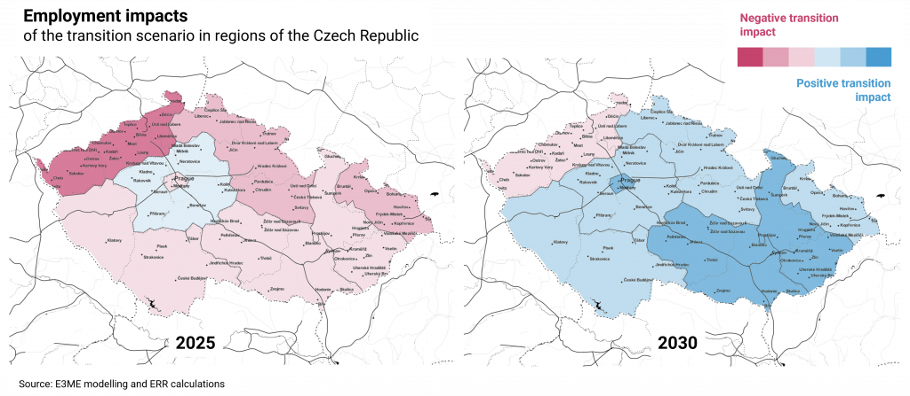

Modelling the regional impacts of macro scenarios - Just transition in the Czech Republic
Originally published in Oct 2021 on Cambridge Econometrics E3ME blog
In response to the increasing policy need to assess the distributional effects of transition to low-carbon economy, Cambridge Econometrics has developed a novel method to model local impacts, by disaggregating E3ME simulation results into regional (NUTS-2) estimates. This article introduces this novel method and shows how it was used to support the understanding of regional impacts of low-carbon transition in Romania and Czechia.
Consistent projections across several dimensions
The recently updated version of our macroeconomic model, E3ME has 70 regions, covering much of the world (this development will be covered in an upcoming article). The spatial resolution is sometimes on the level of regions (i.e. African regions) and sometimes on the level of countries (i.e. EU member states).
The goal of the model is often to simulate and understand the impacts of global policies or policies affecting a number of countries (e.g. EU policies or trade policies between major economies) or impacts in a single country (e.g. recovery in South Africa or sectoral decarbonization in Germany).
While the work of Cambridge Econometrics goes beyond this in spatial terms, looking at regional capital stocks or the regional effects of COVID-19, in these cases we often build on methods and tools other than our macroeconomic model E3ME.
Recently, however, we have built a framework to produce modelling that is comprehensive and internally consistent with E3ME national-level modelling. Our new tool enables us to “disaggregate” E3ME scenario results into regional results, using the historical performance of those regions to predict future outcomes. Based on E3ME scenarios, be it a scenario of decarbonization, economic recovery or trade policy, we can estimate regional impacts on NUTS-2 levels in EU member states.
The need for distributional analysis
The rationale behind this new development is the increasing interest in the inequality aspects of decarbonization policies.
We believe and show in our work that climate mitigation and the necessary transition to a low-carbon economy is not necessarily a burden on global economy, but rather
Nevertheless, while this is true at the level of the global economy and for the “net” impacts; vulnerable groups and regions might still be adversely impacted by the transition. That is why it is increasingly important to “unpack” what national outcomes mean for local regions and for different groups. For this reason our analyses already tries to untangle effects of policies across income groups.
At the EU level it is also important to understand spatial differences:
- Industries that are heavily impacted by the transition are often spatially concentrated (i.e. coal regions).
- There are relevant regional disparities that already exist in and across EU member states, which can be aggravated by new policies aiming for transformation.
The European Results Regionalisation tool (ERR)
ERR is intended to produce projections and impact assessment on the regional level which is consistent with national level (and EU and global level) scenario outcomes. The solution builds on the work of Mayor, López and Pérez and uses historical data on economic performance (and employment) of sectors in the target regions, alongside the national-level E3ME sectoral results, to build regional projections.
The below figure illustrates this process.

Figure 1 – Steps in ERR to calculate regional-sectoral estimates that are consistent with national and/or global scenarios
Step 1: we project the relative competitiveness of economic sectors within the region to the future.
Observed economic variables (i.e. output or employment) are decomposed to three factors in the historical data: national drivers, industry-mix drivers and a competitive factor (i.e. regional competitive advantage within the sector). Then we use a forecasting method called ARIMA to predict the competitive drivers based on historical performance of the sector in the region.
Step 2: we use national and sectoral impacts of the analyse scenario estimated with E3ME
We combine these effects with the competitive effect, that we derived in the first step, to arrive at an estimated impact at the regional-sectoral level. As we do this in an iterative fashion, there could be impacts that reinforce each other, e.g. if a region has a competitive advantage in one sector (as captured by the competitive drivers) and that particular sector is growing quickly in the E3ME scenario on a national level due to some policy impact, then a substantial part of that sectoral growth will be „allocated” to the sector with a competitive advantage.
Using E3ME and ERR for analysing regional impacts of low-carbon transition
The framework has been used to quantify potential regional effects of the low-carbon transition and Europe’s climate ambition in two countries: Romania and the Czech Republic.
Both countries are in the process of preparing their regional Just Transition plans. These plans are expected to provide relief in the form of new jobs, opportunities and economic support for those communities who are going to be adversely impacted by the transition process (e.g. regions with high dependency on coal mining).
Cambridge Econometrics has worked together with Frankfurt School of Finance & Management and with local partners to support the drafting of these plans.
An important part of the plans is to build an understanding of potential regional effects of the climate transition. ERR complemented the analysis here, with quantified estimates on the expected effects. Together with our partners, created national level macroeconomic and energy scenarios that were illustrative of the changes proposed in the countries’ national energy and climate plans (NECP) and in the EU’s Green Deal.
These scenarios were then run using E3ME, estimating impacts for the next decades and then ERR was used to disaggregate the impacts to the regional level.
Due to the nature of the transition we have developed a separate bottom-up method for allocating changes in the energy sector to the regional level (i.e. where fossil plants are expected to be closed and where renewable plants could appear).
Regional impacts of transition from Czechia
Results in Czechia shown that two development regions could be hit particularly hard by the transition process:
- the regions Northwest (top-left region with dark red on the first map)
- Moravia-Silesia (rightmost region)
Both have shown higher than average negative employment effects by 2025.
Results for the Northwest region also indicated that it could be the only region in the Czech Republic where employment effects of the transition can stay negative by 2030 (right panel).

Figure 2 – Mapping of regional employment impacts of the transition scenario
Not coincidentally, these are specifically the regions which are targeted by the Just Transition plans as these regions are home to activities that are connected to fossil energy such as heavy industry, coal mining and coal based power generation.
The modelling enables us to quantify losses here and, as in this project, to complement more qualitative and on-the-ground approaches to understand the distributional effects of high-level policies.
Understanding these distributional effects are valuable to manage expectations about the necessary transition to low-carbon economy, but also to enhance policy targeting in order to make the transition fair and easier for everyone.